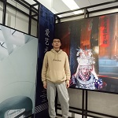
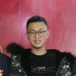
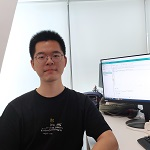
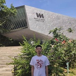

Current Members
Ph.D. Students

Yiru Zhao
Yiru Zhao is a Ph.D.student in School of Cyber Science and Engineering, Wuhan University from 2019.Xiaoke Wang
Xiaoke Wang is a Ph.D.student in School of Cyber Science and Engineering, Wuhan University from 2020.Kuangyu Gu
Kuangyu Gu is a Ph.D.student in School of Cyber Science and Engineering, Wuhan University from 2021.Master Students
Tao Hui
Tao Hui is a master student in School of Cyber Science and Engineering, Wuhan University from 2020.Wenxin Li
Wenxin Li is a master student in School of Cyber Science and Engineering, Wuhan University from 2020.Her research focuses on AI security, such as backdoor detection, deepfake detection (ICICS'2020).

Ruiheng Shi
Ruiheng Shi is a master student in School of Cyber Science and Engineering, Wuhan University from 2020.Qi Wang
Qi Wang is a master student in School of Cyber Science and Engineering, Wuhan University from 2020.His research focuses on AI security, such as backdoor detection, deepfake detection, DNN testing.
Long Gao
Long Gao is a master student in School of Cyber Science and Engineering, Wuhan University from 2021.Mengying Hu
Mengying Hu is a master student in School of Cyber Science and Engineering, Wuhan University from 2021.Xinkang Lin
Xinkang Lin is a master student in School of Cyber Science and Engineering, Wuhan University from 2021.Qihan Wan
Qihan Wan is a master student in School of Cyber Science and Engineering, Wuhan University from 2021.Chaohui Zhou
Chaohui Zhou is a master student in School of Cyber Science and Engineering, Wuhan University from 2021.Xiaofan Bai
Xiaofan Bai is a master student in School of Cyber Science and Engineering, Wuhan University from 2022.

Yiran Ma
Yiran Ma is a master student in School of Cyber Science and Engineering, Wuhan University from 2022.Junqi Wang
Junqi Wang is a master student in School of Cyber Science and Engineering, Wuhan University from 2022.Zhifeng Xu
Zhifeng Xu is a master student in School of Cyber Science and Engineering, Wuhan University from 2022.Aorui Zhang
Aorui Zhang is a master student in School of Cyber Science and Engineering, Wuhan University from 2022.Alumni
Yinshan Jin
SinaftYinshan Jin graduated from School of Cyber Science and Engineering, Wuhan University with Master's degree in 2019.
Qinliang Liu
China UnionPayQinliang Liu graduated from School of Cyber Science and Engineering, Wuhan University with Master's degree in 2019.

Wanfeng Ge
TripWanfeng Ge graduated from School of Cyber Science and Engineering, Wuhan University with Master's degree in 2020.
Yichen Zhang
ByteDanceYichen Zhang graduated from School of Cyber Science and Engineering, Wuhan University with Master's degree in 2020.

Pengcheng Cao
State Grid Corporation of ChinaPengcheng Cao graduated from School of Cyber Science and Engineering, Wuhan University with Master's degree in 2021.
Keyang Jiang
TencentKeyang Jiang graduated from School of Cyber Science and Engineering, Wuhan University with Master's degree in 2022.
Yuncong Zhu
State Grid Corporation of ChinaYuncong Zhu graduated from School of Cyber Science and Engineering, Wuhan University with Master's degree in 2022.